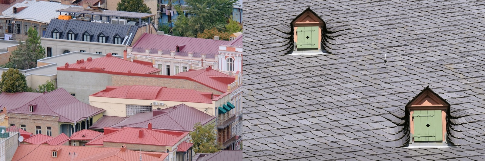

Metal Roof vs Shingles
The two roofs most people choose between — one costs more and lasts three times as long. A builder's honest, side-by-side breakdown of cost, lifespan, and which wins in a hot, stormy climate.

This is the roofing decision most homeowners actually face: the familiar, cheap asphalt shingle, or the pricier, far longer-lived metal roof. The short version — shingles win on upfront price and nothing else; metal wins on lifespan, durability, heat, and storms. Which one is right depends on how long you'll own the house and how harsh your climate is.
The quick verdict
For a permanent home in a hot, wet, hurricane-prone climate, metal wins clearly — it costs more upfront but lasts 3× as long, reflects heat, and survives storms. Choose shingles only if the lowest possible upfront cost is the deciding factor or you're holding the property short-term.The head-to-head
| Factor | Metal roof | Asphalt shingles |
|---|---|---|
| Upfront cost | 🟡 Higher — ~$80–160/m² | 🟢 Lowest — ~$30–70/m² |
| Lifespan | 🟢 40–70 years | 🔴 12–25 years (less in the tropics) |
| Cost per year of life | 🟢 Lowest — buy once | 🔴 Higher — replace 2–3× |
| Heat / UV | 🟢 Reflects solar heat | 🔴 Absorbs heat; UV degrades it |
| Hurricane / wind | 🟢 Best-in-class when anchored | 🔴 Most likely to lift or tear off |
| Humidity / algae | 🟢 Doesn't grow algae | 🔴 Algae/mold streaks in humidity |
| Noise in rain | 🟡 Quiet over deck + insulation | 🟢 Naturally quiet |
| Install ease | 🟡 Specialist crew | 🟢 Fast, any roofer |
How they actually differ
The whole comparison comes down to a time horizon. Shingles are cheaper the day they go on and more expensive every year after, because you'll re-roof two or three times in the span one metal roof lasts. Metal flips that: a bigger cheque once, then decades of nothing. Layer in the tropics — brutal UV, constant humidity, and hurricanes — and shingles age even faster while metal's advantages (heat reflection, storm resistance, no algae) get more valuable.
Which should you choose?
- Choose metal if it's your permanent home, you're in a hot or hurricane-prone place, or you want to never think about the roof again.
- Choose shingles if upfront budget is the hard constraint, you're holding the property short-term, or you're matching a neighborhood look.
- Split the difference? There isn't much of one — but architectural (dimensional) shingles rated for high wind are the best shingle option if you go that way.
…in the tropics specifically
In Panama or Costa Rica the case for metal is even stronger than in a temperate climate. Equatorial UV cooks shingles toward the low end of their already-short life, sustained humidity feeds algae, and hurricane and tropical-storm wind exploits the shingle's weakest link — the sealant bond. A properly anchored standing-seam metal roof sidesteps all three, which is why it's SORA's default for permanent tropical builds.
Not sure which is right for your build?
SORA is a fixed-price design-build platform for foreign buyers in Panama and Costa Rica. We spec the material and method that actually fit your site, climate, and budget — and tell you straight when the cheaper option is the smarter one.
See real 2026 build costs →Frequently asked questions
Is a metal roof worth the extra cost over shingles?
Usually yes for a home you'll keep — a metal roof costs more upfront but lasts 40–70 years versus 12–25 for shingles, so you buy one roof instead of two or three. Over the life of the house it's typically cheaper per year, and it performs far better in heat and storms.
Which is better in a hurricane, metal or shingles?
Metal, clearly. A properly anchored standing-seam metal roof carries some of the best wind ratings available, while asphalt shingles are the most likely common roof to lift and tear off in high wind. The fastening and edge detailing matter as much as the material.
Are metal roofs noisier than shingles?
Slightly, but far less than people expect. Over a solid deck with insulation — the normal way metal is installed on a home — rain noise is modest. The loud 'drumming' comes from bare metal over open framing, not from a properly built metal roof.
Sources & verification
Figures in this guide were checked against primary and authoritative sources on 27 July 2026. Immigration, tax, and cost figures change — always confirm the current rules with the official body or a licensed professional before acting.
- Bob Vila — metal roof vs shingles comparison
- Forbes Home — roofing cost & lifespan data